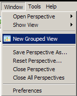
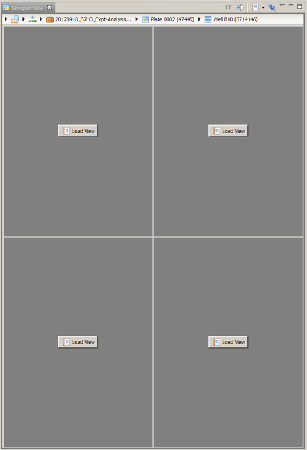
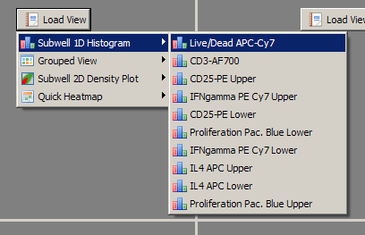
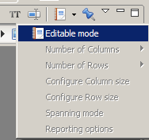
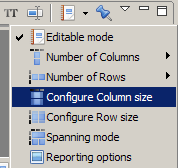
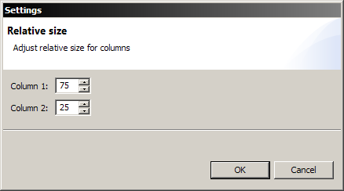
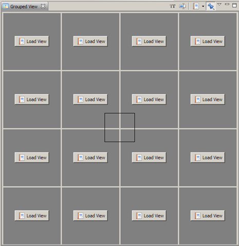
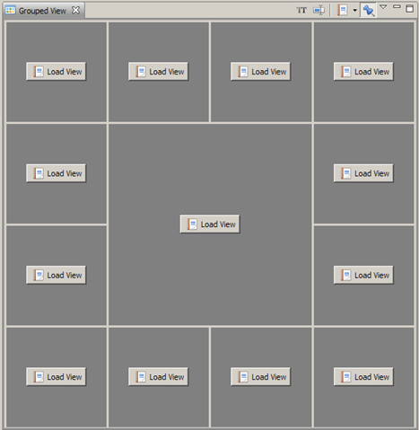
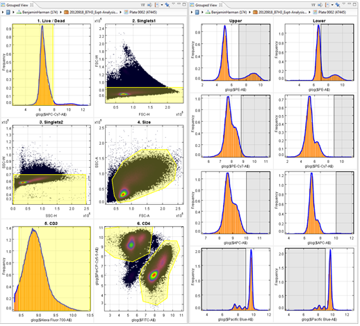

The Grouped View can be used to combine different Saved Views into a single view. This allows you to instantiate multiple views with one single action; easily compare them against each other.
The downside to this approach is that there is no interaction possible with the loaded views inside the grouped view.
Grouped views are personal, just as saved views. Once you create and save them, you can reuse them until they are deleted. It is also possible to copy saved and grouped views from other users.
For reporting, the grouped view can be used as a page layout template to show multiple saved views on one report page. The sizes for each loaded view in the Saved View can be configured to your likings.
Opening a Grouped View
- From the menu bar, select Window >
New Grouped View.

- By default, the grouped view opens with 4 empty panels, where saved views can be placed into.

- To load a saved view in one of the grid cells, click on the "Load View" button. The saved groups are grouped by view type. Click on the saved view that you want to load.

Configuring a Grouped View
The grouped view can be customized in several ways. You can change the number of rows, columns, and the width and height of each row and column. Before you can make these changes you must make sure that the Grouped View is in editable mode.
To enable editable mode, click on the "View Menu" icon in the view toolbar and select Editable mode.

When in editable mode, the following options become available:
- Change the number of columns using the Number of Columns option;
- Change the number of rows using the Number of Rows option;
- Change the width division by using the Configure Column Size;
- Change the height division by using the Configure Row Size;
- Span rows or columns using the Spanning Mode;
- Change specific options for reporting using the Reporting options;
- Right-clicking on an already loaded saved view allows you to load a different view.
The following options are also available when not in editable mode:
- Showing the view name for each loaded view;
- Adding/changing title for the Grouped View.
Configuring Column/Row Size
- In the "Views Menu", click on "Configure Column size" or "Configure Row size" depending on what size you want to change.

- Modify the relative size of the two components (expressed as percentages) and click Ok.

Spanning Mode
- In the "Views Menu", check "Spanning Mode". Note: spanning mode will remain active until a span selection has been made or if you uncheck "Spanning Mode".
- Now click and start dragging (do not release the mouse button) in the cell that you want to span. You will see a black rectangle appear. Make sure that all the cells that you want to span appear inside the black rectangle.

- When you are done, release the mouse. You will now see that the selected cells are spanned. If you want to span additional cells, please repeat these steps. Please note that you cannot span already spanned cells. If you made an error, reselect the number of rows or columns.

Two examples of grouped views are shown in the figure below. The left panel shows a grouped view consisting of 6 saved chart views, the right panel has 8.
